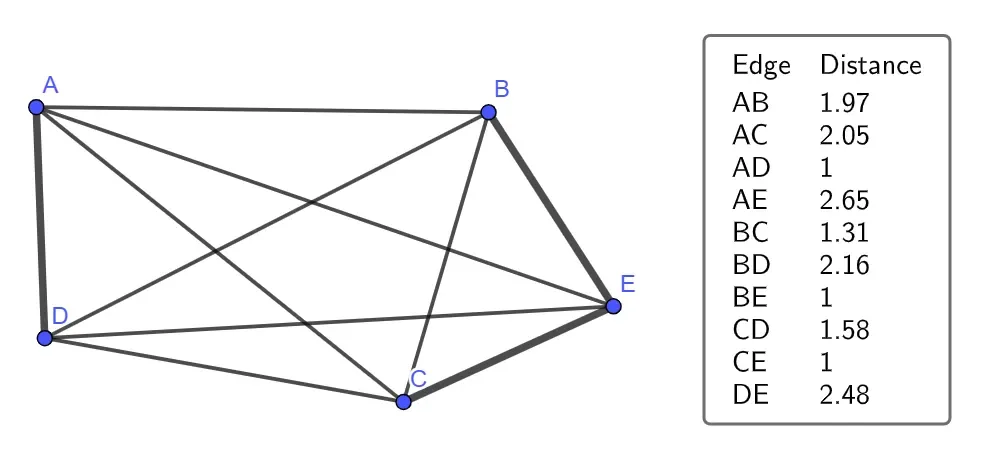

Пол Эрдёш — один из самых плодовитых математиков XX века, автор более 1500 статей. В 1946 году он сформулировал задачу о единичных расстояниях: если на плоскости расположены n точек, сколько пар из них могут находиться ровно на расстоянии 1 друг от друга? Задача обманчиво проста в формулировке, но за ней скрывается глубокая комбинаторная структура. Для малого числа точек оптимальные конфигурации известны — исследователи Алексеев, Миксон и Паршалл нашли решения вплоть до 21 точки. Дальше задача остаётся открытой. Эрдёш предложил искать не точный ответ, а верхние и нижние оценки числа единичных расстояний для большого n — и именно эта часть задачи не была закрыта восемь десятилетий.
В середине мая 2025 года OpenAI сообщила, что её внутренняя модель опровергла гипотезу Эрдёша о единичных расстояниях. Компания предоставила ранний доступ к результату нескольким математикам. Тим Гауэрс, лауреат медали Филдса — наиболее престижной награды в математике, — написал, что «решение задачи о единичных расстояниях, вне всякого сомнения, является вехой в математике ИИ». Профессор Торонтского университета Дэниел Литт отметил, что это «первый пример результата, автономно полученного ИИ, который интересен сам по себе, а не как индикатор прогресса».
Как именно модель пришла к доказательству? Ключевой инструмент — теорема Пифагора и свойства целочисленных решений уравнения a² + b² = c². Если выбрать такое c², для которого существует много пар целых чисел a и b, удовлетворяющих уравнению, а затем масштабировать сетку точек с шагом 1/c, то каждая точка окажется на единичном расстоянии от большого числа соседей. Например, при c² = 25 уравнение решается двумя способами: 0² + 5² и 3² + 4², что даёт 12 точек на единичной окружности. Модель применила этот подход в сочетании с идеями из нескольких разделов математики — дискретной геометрии, теории чисел и комбинаторики — и построила полное доказательство. При этом, по оценке наблюдателей, она не создала принципиально новых техник, а умело скомбинировала уже известные.
Модель OpenAI применила существующие методы из нескольких разделов математики, не создавая принципиально новых техник.

После публикации результата человеческие математики доработали и расширили доказательство. Это указывает на характер нынешнего взаимодействия людей и ИИ в науке: модели обладают широким охватом накопленных знаний и готовы перебирать трудоёмкие стратегии доказательства, которые человек отверг бы как бесперспективные. Люди, в свою очередь, способны глубже сосредоточиться на одной проблеме и формулировать более нетривиальные вопросы. Именно постановка новых задач пока остаётся за людьми — модель решила задачу Эрдёша, но не придумала её.
Результат вписывается в прослеживаемую траекторию. Три года назад LLM с трудом справлялись с арифметикой. В прошлом году они начали уверенно решать задачи школьных математических олимпиад. На крупнейшей ежегодной математической конференции — Joint Mathematics Meetings в январе 2025 года — эксперты фиксировали участие ИИ в исследованиях, но лишь в ограниченных сценариях: для превращения вывода модели в публикуемую теорему требовалась существенная человеческая интерпретация. Закрытие гипотезы Эрдёша — следующий шаг в этой прогрессии, а не качественный разрыв с ней. Вместе с тем темп роста возможностей ИИ в математике настолько высок, что роль человека-математика через десятилетие остаётся открытым вопросом.